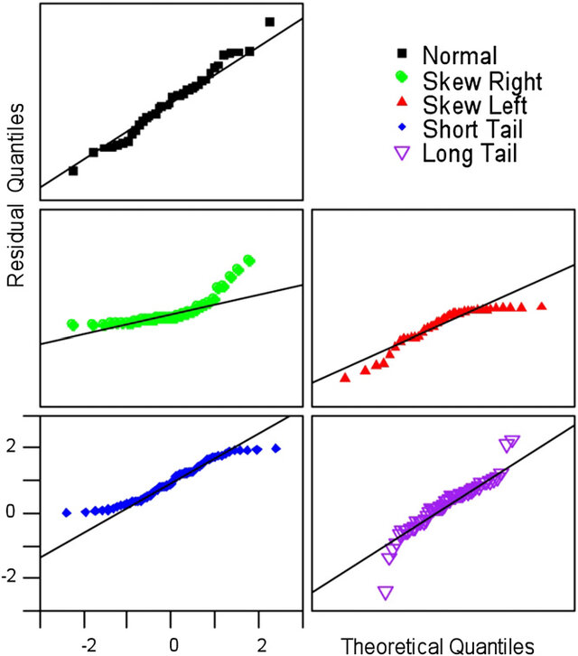

practical3_data <- read.csv("practical3_data.csv")Practical 3 Linear Regression in R
TipHow to approach this practical session
- Have RStudio open and ready to use.
- Be sure to read the contextual information and instructions carefully. This information is necessary to complete the tasks.
- Complete the tasks as you go along - they are labelled “Task”.
- Some of the code you need will be completed, some will be partially completed, some you will need to do yourself. You can copy code examples from this page by clicking on the clipboard icon which appears when you hover over the code examples.
- Buttons to press in your keyboard are shown like this:
Ctrl + S orCmd + S . - Menu items to click in R Studio are shown like this:
File -> Save . Panes or Tabs in R Studio are also shown like this:Environment . - On this page, boxes with a drop down arrow can be collapsed to hide the information inside them. You can also click on the arrow to expand the section.
ImportantDownload the data for this practical
For this session you will need to download the following dataset: practical3_data.csv
Right click and select
Reminder: Importing data into R
To import data into R, you can use the a command that relates to the type of data you are importing. For example, to import the data in the file practical3_data.csv, you would use the following command:
You can also use the menu to import data. To do this, click on the
Import the data
NoteTask
Import the data from the file practical3_data.csv into R. Save the data in a variable called practical3_data.
Check the data has been imported correctly
Our first hypothesis is that there avoidance behaviour can be predicted by the level of depression. We can test this hypothesis using a simple linear regression. First, let’s plot the data to see if there is a relationship.
Plot the data
# plot the data
1plot(avoidance ~ depression, data = practical3_data)- 1
- The plot() function is used to create a scatterplot. The first argument is the formula for the plot. The formula is written as y ~ x. The ~ symbol is read as “is predicted by”. So, in this case, we are saying that avoidance is predicted by depression.
NoteTask
Plot the data.
What does the plot suggest about the relationship between avoidance and depression?
Our next step is to fit a linear regression model to the data.
WarningTesting assumptions
We need to test the assumptions of linear regression before we can interpret the results. However, to do this, we need to run the regression first. So, we will:
- run the regression
- check the assumptions
- interpret the results.
This is because regression assumptions are based on the residuals of the model, not on the raw data.
Run the regression model
We can run regression using the
# run the regression model
1model <- lm(avoidance ~ depression, data = practical3_data)- 1
- The lm() function is used to run a linear regression model. The first argument is the formula for the model. The formula is written as y ~ x. The ~ symbol is read as “is predicted by”. So, in this case, we are saying that avoidance is predicted by depression. The second argument is the name of the data frame that contains the data.
TipWhat is the model?
The terms model or fit, are commonly used in regression analysis.
Model refers to the variables that you included in the model as well as the relationship between them. For example, our model above includes the predictor variable depression and the outcome variable avoidance. The model is the relationship between these variables. In this case, we are saying that avoidance is predicted by depression.
A different model would be one that included different predictor variables. For example, we could have a model that included the predictor variable treatment and the outcome variable avoidance, or model that includes both depression and treatment as predictor variables and avoidance as the outcome variable.
Fit refers to the idea that we want to know if this model is a good fit for the data. In other words, does the model explain the data well?
We might find that our first model is not a good fit for the data. In this case, we might try a different model. We will learn next week how to compare different models to see which one is the best fit for the data.
Check the assumptions
We can check the assumptions of linear regression using the
# check the assumptions
1plot(model)- 1
- The plot() function is used to create a plot of the model. It actually shows several plots in sequence.
When you run the plot function, there will be a message in the console that says “Hit
to see next plot:”. You need to press enter to move through the plots.
The assumption of linearity
The first plot is a plot of the residuals against the fitted values. This plot is used to check the assumption of linearity. The assumption of linearity states that the relationship between the predictor variable and the outcome variable is linear. In other words, the relationship between the predictor variable and the outcome variable can be described by a straight line. If the relationship is not linear, then the model is not a good fit for the data.

TipLinear and non-linear residuals
Good: Random scatter around the line. The line is straight.
Bad: Non-random scatter around the line. The line is not straight.
What do we do if this assumption is violated?: Linearity is a very important assumption. If the assumption is violated, then the linear model is likely not a good fit for the data. In this case we should probably try a different model. Data are never perfect, but we shouldn’t ignore a clear violation of linearity.
The assumption of normality
The second plot is a normal Q-Q plot of the residuals. This plot is used to check the assumption of normality. The assumption of normality states that the residuals are normally distributed. If the residuals are not normally distributed, then the model is not a good fit for the data.

TipNormal and non-normal residuals
Good: The points follow the line.
Bad: The points do not follow the line.
What do we do if this assumption is violated?: Normality affects the accuracy of beta values, significance tests and confidence intervals. However, it is most important with small sample sizes. As sample size increases, the assumption of normality becomes less important.
The assumption of homoscedasticity
The third plot is a scale-location plot of the residuals against the fitted values. This plot is used to check the assumption of homoscedasticity. The assumption of homoscedasticity states that the residuals have equal variance. If the residuals do not have equal variance, then the model is not a good fit for the data.

TipHomoscedastic and heteroscedastic residuals
Good: The points are randomly scattered around the line. and the line is horizontal.
Bad: The points are not randomly scattered around the line. and the line is not horizontal.
What do we do if this assumption is violated?: This will affect the accuracy of the beta values, significance tests and confidence intervals. Essentially, it means that conclusions we draw from the model are less accurate. What we do depends on the situation. Transformation of the DV (e.g. log transformation) might help. If not, there are weighted regression models that can be used.
Checking for outliers or influential cases
The fourth plot is a plot of Cook’s distance. This plot is used to check for outliers. An outlier is a data point that is very different from the rest of the data. If there are outliers, then they could be affecting the regression model. The threshold for Cook’s distance is 1. If a data point has a Cook’s distance greater than 1, then it is considered an outlier.
The fifth plot is a plot of the residuals against the leverage. The sixth plot is a plot of the Cook’s distance against the leverage. They are pretty much the same plots as the plot 4.

On the plot above, Cook’s Distance is indicated by a red line. If a data point is outside the red line, then it is considered an outlier.
Leverage is the idea that a particular outlier might have a lot of influence on the regression model. Look for data points that are outside the red line on the top right or bottom right of the plot. These are data points that have a lot of leverage and might be influencing the regression model.
TipOutliers and influential cases
Good: No data points outside the red lines.
Bad: Data points outside the red lines. Outliers with high leverage.
What do we do if this assumption is violated?: Outliers will affect the calculation of variances (e.g. sum of squares or standard deviation) that are used in many calculations related to the regression model. If there are influentual cases, we should consider removing them from the analysis. When doing so, it is important to explain why you removed them, and be transparent about how this affected the model results.
NoteTask
Check the assumptions of linear regression for the model above. Note any violations of the assumptions and explain your thinking.
Interpret the regression model results
To view the results of the regression model, we use the
model <- lm(avoidance ~ depression, data = practical3_data)
summary(model)Call: The regression formula
The first line of the output is the regression formula. This is the formula that was used to create the model.
Residuals: The residuals
The second line of the output is the residuals. The residuals are the difference between the actual values of the outcome variable and the predicted values of the outcome variable. This section is giving us some summary statistics about the residuals. However, we usually check the assumptions using the plots.
Coefficients: The beta values
The third section of the output is the coefficients. You will see a line of values for the intercept and another line for each of the predictor variables in the model. Estimate is the beta value. Std. Error is the standard error of the beta value. Pr(>|t|) is the p value for the beta value.
Intercept: We are not usually interested in this line by itself. It is the value of the outcome variable when all of the predictor variables are equal to zero. In this case, it is the value of avoidance when depression is equal to zero. However, it might be the case that depression cannot be equal to zero. In this case, the intercept would not be meaningful. If the predictor were a categorical variable, then the intercept would be the value of the outcome variable when the predictor variable is equal to the reference category (i.e. The mean of the outcome for that group).
Depression: This is the beta value for depression. It is the amount that avoidance changes when depression increases by one unit. What unit means, depends on how the variables were measured, so it is likely to mean one point in the scale used to measure depression, for example.
The final section in the output shows:
Residual standard error. This is the standard deviation of the residuals. It is the average amount that the actual values of the outcome variable differ from the predicted values of the outcome variable.
Multiple R-squared. This is the R-squared value. It is the amount of variance in the outcome variable that is explained by the model. We usually talk about this as a percentage value.
Adjusted R-squared. This is the adjusted R-squared value. It is the amount of variance in the outcome variable that is explained by the model, adjusted for the number of predictor variables in the model. This is to account for the fact that having more predictors in the model will always increase the R-squared value, even if the predictors are not related to the outcome variable. It is relevant when we have more than one predictor variable in the model.
F Statistic. The F value comes from the ANOVA that is used to test the significance of the model. It tests the null hypothesis that all of the beta values are equal to zero.
p-value. This is the p value for the F statistic (the significance of the overall regression model, with all of the predictors).
NoteTask
Interpret the regression model results.
Results of the regression model
Is the overall model significant?
Is the relationship between depression and avoidance significant?
What is the beta value for depression?
Is the beta value for depression significant?
Regression with a categorical predictor variable
Our next hypothesis is that the level of depression is different for each treatment group. We can test this hypothesis using a regression model with a categorical predictor variable.
WarningTesting assumptions with a categorical predictor variable
When we have a categorical predictor variable, we need to be careful about how we interpret the assumptions of linear regression. The assumptions of linearity, normality and homoscedasticity are still relevant. However, because we have a categorical predictor, the plots will look different. We need to check the assumptions for each level of the categorical predictor variable. Some of the plots will change to reflect this.
NoteTask
Run the linear regression model with treatment as the predictor variable and depression as the outcome variable. Save the model in a variable called model2.
Check the assumptions of linear regression for the model above. Note any violations of the assumptions and explain your thinking.
Interpret the regression model results.
NoteTask
Save your script.
You are done for today
TipFurther resources for regression analysis